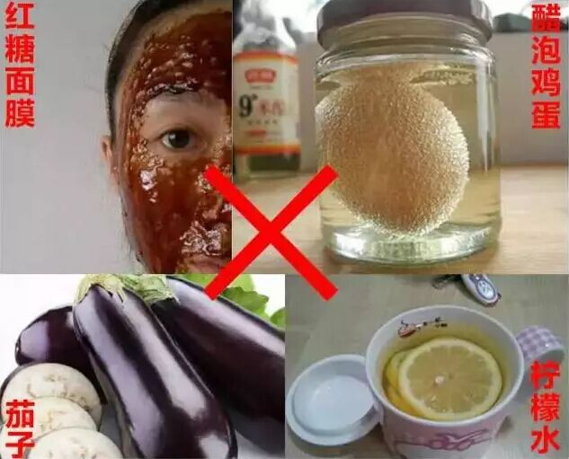
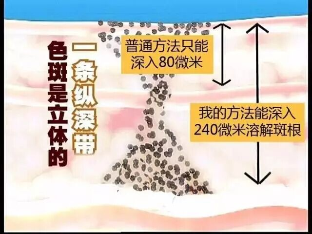
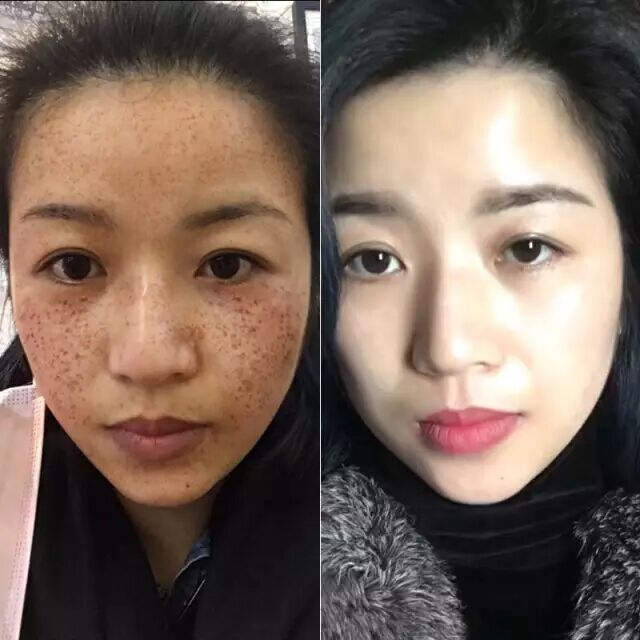
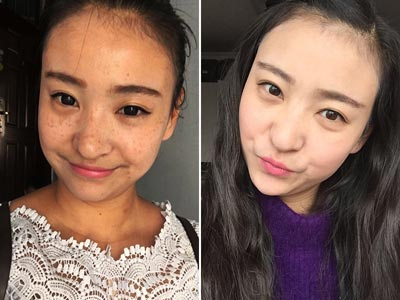
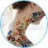

在这个全民看脸的时代，脸上长斑是一件苦逼的事！ 因为长斑的肌肤就像一件残破不堪的衣服，怎么缝补都是补丁，而且越补越烂 ，直接影响着我们的学习、择业、爱情、家庭甚至命运。 这样苦逼的生活，你还要忍多久？！
吉米-纯天然祛斑第一人
吉米老师给爱美女性的一封忠告信
大家好，我是吉米。在中国，有2亿多色斑女性， 色斑带给女性的烦恼和伤害最大！所以，我一直想为大家找到一种纯天然的方法彻底解决色斑问题。功夫不负有心人，多年来，我走访了世界各地寻找原料和配方，与国际研发专家攻关多年，终于找到了！

▲ 盲目的祛斑不可取
6年专攻色斑，祛斑对我很简单
我看过很多长斑的朋友，用过各种膏霜祛斑，效果 不佳；又用激光祛斑，发现色斑会反弹加重；最后，轻信网络上流传的祛斑偏方——尝试醋泡蛋，导致皮肤角质层被破坏；尝试柠檬祛斑，导致面部红肿皮肤老化； 尝试红糖面膜，导致皮肤微循环被破坏，最终导致色斑越来越严重——一旦错过最佳时机，以后祛斑难度就越来越大，而且出现红肿、脱皮、过敏，脸一旦毁了，生 活怎么继续？！
6年来，我的这套方法，对 各种色斑效果都非常好，而且能避免长斑带来的后遗症，长期用还能祛黑，祛黄，美白抗皱，缩小毛孔，祛除痘印，产生冻龄的效果，让皮肤变得水嫩光滑、紧致白皙！
治一个，好一个！我只用事实说话
典型案例1：黄褐斑
今年38岁的周妍女士说，她27岁生完小孩开始长斑，现在孩子都11岁了，斑也没消掉。自己也买过一些祛斑的产品，刚开始有点效果，后来反弹很厉害，斑更明显了。她想知道是什么原因，希望我能帮她。
总结分析：怀孕产后的女性，非常容易长黄褐斑，还有妊娠斑，长在颧骨两侧，就叫蝴蝶斑。黄褐斑的根源是细胞代谢通道被堵塞，皮肤缺少水分。有 黄褐斑的女性皮肤，都是偏干，容易起皱。所以，我的方法是用纯天然植物精华和配方打通代谢通道，补足水分，让色斑很快连根溶解掉，同时还能美白、祛皱！我遇到过很多类似情况，都是用这个方法甩掉斑点的。加 微信号: 详细了解祛斑方法，朋友圈有更多祛斑妙招和真人案例。
典型案例2：雀斑
湖南长沙的刘莉，36岁，她姐姐和父母都没长斑，只有她脸上有斑，刘莉说她外婆以前长斑。从小长斑让她苦不堪言，家人四处寻找祛斑偏方，看过老中医，中药也喝了不少，脸上的斑愣是纹丝不动，这样反复折腾的脸部 红肿过敏 ，风一吹就 刺痛发红 ，在她绝望之际，找到了我。
总结分析：她的斑，属于先天性雀斑，祛斑时长要更久点，因为斑根在真皮层！很多人盲目采用剥脱分离法、或是一些带有腐蚀性的祛斑产品，只是把斑点从皮肤表层去掉，结痂掉了之后，斑点还是一个没少。我针对她的情况， 配置了一套深透淡斑方法，最后，她不但 斑点彻底消失，肤色不均、毛孔粗大的问题也改善了。想要不伤皮肤又能摆脱色斑，加 微信号: 一对一为你制定祛斑方案。

色斑看起来只在皮肤表面，其实，它是立体的，它就像树根一样，在皮肤240微米下方的基底层扎根。传统膏霜都只能停在表面，最多到80微米，到不了基底层，所以根本不能溶解 斑根。斑根不除，色斑还会长出来。还留在真皮层内，没有消除。所以，必须溶解斑根，才能彻底祛斑不反弹。
典型案例3：混合型斑、嗮斑
上海闵行区的陈小姐，29岁， 24岁开始长斑，干性皮肤，据她描述，刚开始长斑并不明显，随便涂点BB霜就能遮住。最近几年，脸上的斑越来越明显，越来越多，尤其夏天，太阳一晒，发黑加重，更加难看。之前用过很多祛斑产品，都是反反复复，皮肤也折腾成敏感肌了，她通过朋友找到了我。
总结分析：混合型斑由多种色斑形成，同时会在脸部出现黄褐斑、辐射斑、晒斑，成因比较复杂，夏季暴晒、电磁辐射都会造成混合斑。我给她制定了一套混合型专用产品，一般7-10天就慢慢变淡，20天左右，晒斑就能去掉了，30-40天，其他色斑也能很快消除，结果让她非常满意。加 微信号: 一对一定制祛斑方案，教你轻松祛斑不反弹。
典型案例4：过敏性斑
武汉的江小姐，30岁，由于长期用各种化妆品，脸部长斑，皮肤发红，已有4年，近一年来肌肤蜕皮较严重，有时能看到脸部细细的红血丝。斑都长在眼睛周围及脸颊处。每天皮肤仍很干燥、紧绷。夏天烈日下就算打着遮阳伞出去，回来第二天脸就开始泛红，像过敏一样，逐渐出现色斑。
总结分析：由于女人经常用各种化妆品，导致面部吸收了很多化学毒素，导致过敏性色斑越来越多，典型特征是，过敏、红血丝、疼痒、起皮等症状。我采用的排毒修护专用产品，修复+消炎，30天左右，斑没了，敏感肌也得到改善，一举两得。加 微信号: 一对一定制祛斑方案，教你轻松祛斑不反弹。
到现在为止，全国已经有千万人用我的方法成功祛斑，她们纷纷反映：
使用7天，多年的色斑开始变淡，面积逐渐缩小，皮肤白皙度平均提高2-6度。使用15-20天，额头全褐色或灰色斑点会大面积消退。
使用30天，大片色斑已基本消除。皮肤焕然一新，变得白皙水嫩光滑！
一般1-2个月，不管你是日晒斑、黄褐斑、顽固性色斑、妊娠斑、蝴蝶斑、老年斑，还是痘印沉着、皮肤晦暗、发黄粗糙，只要使用我的方法，都能发生根本性的变化！
最关键的是，我的方法用起来非常简单！滴在手上，抹在脸上，轻轻按一按，一段时间之后，色斑能轻松消退！
很多人担心效果太快会刺激伤害皮肤。这个担心是多余的。为什么呢？因为以前很多膏霜化妆品用铅汞等重金属美白祛斑，导致 皮肤红肿、疼痒、脱皮、过敏，对皮肤伤害极大！
上千万女性因我成功“换脸”
案例档案：黄褐斑+肤色发黄
任启娥，32岁
”我十几岁就开始长斑了，做过美容，没什么效果，生完小孩以后， 脸上的斑比以前还多。而且皮肤很黄，简直是 黄脸婆一个。因为脸上长斑，后来就离婚了。后来用了吉米老师的祛斑方法，感觉皮肤就白了，细了，斑点也淡化了，现在整个脸一点斑都没有了，白了不少！皮肤好了，什么都好了！希望每个人都能祛斑成功。”
案例档案：黄褐斑+色素沉+毛孔粗大
刘女士，45岁，个体，陕西渭南人
已经45岁的刘姐，半年前陷入婚姻危机，老公嫌她年老色衰，满脸斑点，吵着要离婚，她试过很多方法都没用；刘姐女儿通过朋友找到我，我给她制定了一套针对性的祛斑方案， 一个多月时间，斑点消失，刘姐皮肤干净透亮，整个人看起来年轻了十岁都不止，跟女儿站在一起就像姐妹花，老公再也不提离婚了，母女俩专程找到我要当面谢我。加我的 微信号: 一对一咨询，分斑对治，帮你轻松祛斑。
已经45岁的刘姐，半年前陷入婚姻危机，老公嫌她年老色衰，满脸斑点，吵着要离婚，她试过很多方法都没用；刘姐女儿通过朋友找到我，我给她制定了一套针对性的祛斑方案， 一个多月时间，斑点消失，刘姐皮肤干净透亮，整个人看起来年轻了十岁都不止，跟女儿站在一起就像姐妹花，老公再也不提离婚了，母女俩专程找到我要当面谢我。加我的 微信号: 一对一咨询，分斑对治，帮你轻松祛斑。
案例档案：混合斑
王芳，25岁，公司财务，福建福州人
王芳是晒斑和黄褐斑都有，据她说，有段时间，来例假的时候，脸上开始长斑，当时仗着自己年轻也不在意，发展到后来，斑点蔓延到全脸，试过很多偏方，也去过美容院，花了不少钱，斑点还是没半点改善。 经过我们调理后，不到一个月时间，斑点全部消失，皮肤变得水润白嫩，王芳非常感谢我们，推荐了好几个朋友找我们调理。
案例档案：辐射斑
陈慧，31岁，行政人事专员，安徽合肥人
陈 慧是典型的办公族，经常对着电脑、熬夜加班，眼周及鼻梁处长斑、皮肤干燥、肤色暗黄、眼睛干涩、黑眼圈不断加重。试过很多方法，用过不少大牌祛斑产品，结 果越来越重！后来找到我，短短20多天后，她的皮肤变得干净无瑕，水嫩白润，现在大半年过去了，斑点也没反弹。加微信 免费教你祛斑方法。
找对方法，祛斑就是这么简单
爱美之心人皆有之，女人脸上有一点点的瑕疵都很纠心
。色斑一旦出现，衰老就会加速，由点成片，黑压压的，毁了整张脸。为什么别人能把色斑祛得干干净净，而你用尽各种方法，斑点仍是纹丝不动？是别人的方法用对了，你的方法是错的！祛斑不是在于你花了多少钱，关键在于找对方法！
一把钥匙开一把锁！要想祛斑 ，就要根据个人肤质，制定针对性的祛斑方法来解决！否则，你再努力，花再多的钱都是白费功夫，瞎折腾。现在加吉米老师微信号: ， 1对1咨询，分斑对治，帮你轻松祛斑！
菜头小美
现在用吉米老师的祛斑方案有1周时间了，早晨照镜子时发现，左侧脸上的色斑明显变淡了，真的很开心，我还会继续用，如果以后色斑都去掉了，我再来跟大家汇报。
昨天
阿珂
上个月加吉米老师 微信号: ，她的方法对晒斑效果很好哦，一对一的服务也是非常的贴心，真心感谢！这是我的丑照，鼓足勇气才发的，大家鼓励一下吧！

昨天
黄小邪的黄
我 之前脸上的色斑比较严重，前几年，看到各种广告，自己胡乱琢磨用过各种方法和产品，有些是用重金属祛斑的，见效很快，但是不用很快就反弹了，色斑比以前还 重，更黑了，前后折腾了好几年，除了眼睛，整个脸红彤彤的，简直毁容了，走到哪里都带着帽子，感觉人生从此灰暗绝望！用了吉米老师的方法，2个月，红肿居 然消退了，色斑也变淡了很多。看着镜子里的自己，每一天都在改变，感觉人生又重新开始了。吉米老师，谢谢。
昨天
周医生
我是中国药科大学附属医院的一名医生，此文中的产品确有极好的祛斑效果。祛斑必备的几个条件：1，心态。2、找到好方法，3、最好由专业美肤老师指导。
昨天
搜菲菲
我真是深深感受到了别人说的祛斑等于整容是什么意思，祛斑后，爱情事业都超顺！像是开了挂一样！感谢吉米老师。

昨天
shangyu
我是生孩子后长的妊娠斑，刚开始很小的一块，当时也没当回事，现在32岁了，斑面积增加了一倍以上，深黄色那种。去年尝试过去美容院，已反弹。后来加了吉米老师微信： ，现在皮肤比祛斑前还要好。
昨天

杨阿hin
真的很好，本人答应效果好给吉米老师做宣传的，上照片了。
昨天
绿海
第一次使用吉米老师的方法，用了以后脸上的斑很快就变淡了，也没有过敏现象，相信坚持用上一个月效果会更好的，哈哈~
昨天
笑米
最近在哪个卫视上好像见过这位吉米老师，是访谈节目，教别人如何预防色斑形成的。已经加吉米老师微信了，看到朋友圈好多人 用好了，前后对比照片，好震撼，那么多色斑比我严重的都好了，真是心痒痒啊！
昨天
澄明之瞳
昨天刚开始用吉米老师 微信号: 的祛斑方案，本人超级敏感肌，皮肤未过敏，惊喜，继续使用中···
昨天
webrre
已 经用了15天了，妊娠斑变淡了不少，现在还有一点点印子，不注意基本上看不出来。吉米老师真的很专业，每隔几天就主动问我的情况，之前听一个闺蜜介绍的， 她用得早，现在水嫩白皙的，一点问题都没有。当初真的很害怕有副作用，现在看来很靠谱，很温和，一点刺激都没有，用好了我会多宣传的。
昨天

吉米——美容教父，中国第一个成名的顶尖美容师，曾担任过章子怡、巩俐、刘嘉玲等大牌明星的御用美容师，20多年前曾红遍大江南北。成名之后，他却淡出名利场，潜心研究出一种世界领先的纯天然祛斑美白秘方，已经为千万女性成功祛除斑点！ 立即咨询
微信扫描上方吉米老师二维码、或添加吉米老师微信：